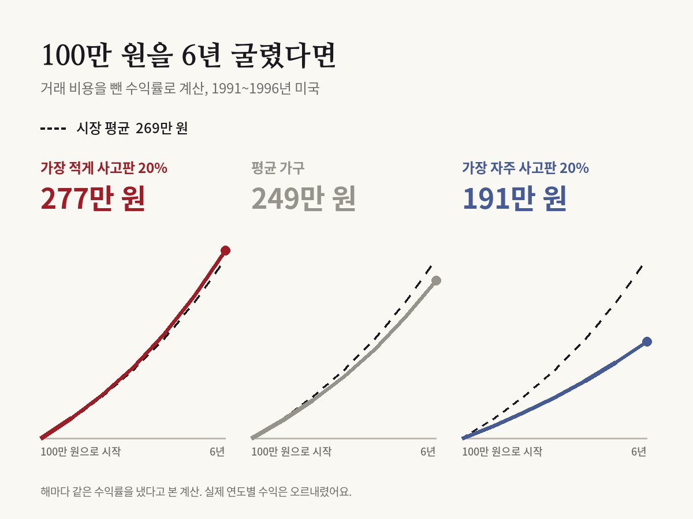

가장 적게 사고판 투자자가 가장 크게 벌었다
Brad M. Barber, Terrance Odean · Journal of Finance, 2000

016만 6천 가구의 계좌를 열어 보니
미국 캘리포니아대 데이비스 캠퍼스의 브래드 바버와 테런스 오딘은 한 대형 할인 증권사에서 6만 6,465가구의 계좌 기록을 받았어요. 1991년부터 1996년까지 6년 동안 이 가구들이 어떤 주식을 언제 사고팔았는지가 모두 담긴 자료예요.
두 사람은 가구를 거래 빈도에 따라 다섯 묶음으로 나눴어요. 가장 자주 사고판 20%는 거래 비용을 빼고 연 11.4%를 벌었어요. 같은 기간 시장 전체 수익률은 연 17.9%였어요. 가장 덜 거래한 20%는 연 18.5%로 시장과 비슷했어요.
평균 가구도 연 16.4%로 시장에 못 미쳤어요. 평균 가구는 1년에 들고 있는 주식의 75% 넘게를 바꿨고, 가장 자주 거래한 묶음은 1년에 250% 넘게, 그러니까 포트폴리오 전체를 두 번 넘게 갈아 치웠어요. 논문은 2000년 《저널 오브 파이낸스》에 실렸고, 제목이 곧 결론이에요. '거래는 당신의 재산에 해롭다.'

02차이는 대부분 비용에서 나왔다
이 연구에서 가장 눈여겨볼 숫자는 거래 비용을 빼기 전 수익률이에요. 비용을 빼기 전에는 자주 거래한 가구와 덜 거래한 가구의 수익률이 거의 같았어요. 평균 가구는 비용 전 연 18.7%로 시장과 비슷했어요.
차이를 만든 것은 비용이었어요. 1,000달러가 넘는 거래를 한 번 사고팔 때 수수료로 약 3%, 사는 값과 파는 값의 차이로 약 1%가 빠져나갔어요. 자주 사고팔수록 이 비용이 쌓였어요.
저자들은 결론에서 평균 가구의 부진을 잦은 거래에 드는 비용 탓으로 돌렸어요. 단순 수익률로 보면 고른 종목은 시장만큼 올랐지만, 사고팔 때마다 낸 돈이 그 수익을 갉아먹었어요. 다만 소형주·고위험주에 쏠린 투자 성향까지 감안하면, 가장 자주 거래한 20%는 비용을 빼기 전에도 시장보다 1년에 약 4%포인트 뒤졌어요. 비용을 뺀 뒤에는 그 차이가 10.3%포인트로 벌어졌어요.
03손해를 보면서도 왜 자꾸 사고팔까
세금이나 급하게 현금이 필요한 일로는 1년에 250%라는 회전율을 설명하기 어려워요. 저자들은 '과신'을 꼽았어요. 자기가 가진 정보와 판단을 실제보다 믿는 마음이 지나친 거래로 이어진다는 거예요.
두 사람은 이 설명을 1년 뒤 다른 방법으로 시험했어요. 심리학 연구에서 남성이 돈 문제에 더 자신만만한 경향이 있다는 점에 착안해, 3만 5천 가구 넘는 계좌를 남녀로 나눠 봤어요. 남성은 여성보다 45% 더 많이 거래했고, 거래 때문에 깎인 수익률도 1년에 남성 2.65%포인트, 여성 1.72%포인트로 남성 쪽이 컸어요.
04대만 시장 전체와 2020년 한국에서도
증권사 한 곳의 고객만 본 결과라는 지적은 대만 자료가 메웠어요. 바버와 오딘은 대만 연구자들과 함께 5년 동안 대만 증권거래소에서 이뤄진 모든 거래를 분석했어요. 개인 투자자가 거래로 잃은 돈은 대만 국내총생산의 2.2%, 개인 소득 전체의 2.8%에 이르렀어요. 반대로 기관 투자자는 거래로 1년에 1.5%포인트를 더 벌었어요.
한국 자료도 있어요. 자본시장연구원은 2022년 보고서에서 2020년 개인 투자자 약 20만 명의 거래 기록을 분석했어요. 이 가운데 6만 446명은 2020년 3월 이후 처음 계좌를 연 신규 투자자였어요. 보고서는 이 시기 시장에 들어온 신규 투자자의 60%가 손실을 봤다는 앞선 연구 결과를 함께 정리하고, 잦은 거래와 복권 같은 종목 선호를 성과를 낮춘 요인으로 짚었어요.
이 연구는 3천 번 넘게 인용됐어요. 수수료가 싼 지수 펀드를 사서 오래 들고 가라는 조언의 근거로 지금도 자주 쓰여요.
05개인이 맞힐 때도 있다는 반론
개인 투자자가 늘 틀리기만 한다는 결론에는 반대 결과도 있어요. 에릭 켈리와 폴 테틀록은 2013년 같은 학술지에 미국 개인 투자자의 주문 자료를 분석한 논문을 냈어요. 개인들이 많이 사들인 종목은 다음 달 주가가 올랐고, 그 상승은 되돌려지지 않았어요.
두 결과는 서로를 지우지 않아요. 켈리와 테틀록은 개인 주문의 방향이 주가를 맞히는지를 봤고, 바버와 오딘은 비용까지 낸 뒤 개인의 계좌에 실제로 얼마가 남았는지를 봤어요. 방향을 맞혀도 자주 사고팔면 비용 때문에 손에 쥐는 돈이 줄어들 수 있어요.
06읽을 때 주의할 점
자료는 1990년대 미국이에요. 당시 수수료는 지금보다 훨씬 비쌌어요. 자본시장연구원 보고서는 2020년 국내 주식을 한 번 사고팔 때 거래세와 수수료만 합쳐 약 0.33%로 제시했어요. 논문 속 수수료 약 3%보다 훨씬 낮아요. 비용이 줄어든 만큼 잦은 거래의 손해도 줄었을 가능성이 있어요.
할인 증권사 고객만 대상이었고, 한 가구가 다른 증권사에 가진 계좌는 보지 못했어요. 과신이 원인이라는 설명은 자료와 들어맞는다는 뜻이지, 실험으로 직접 증명한 것은 아니에요. 남녀 비교도 성별과 함께 움직이는 다른 차이를 다 걸러 냈다고 보기는 어려워요.
모든 개인이 손해를 본다는 뜻도 아니에요. 평균과 묶음의 결과이고, 전체로 보면 비용을 빼고도 시장보다 나은 가구가 적지 않았어요.
원 논문
- Barber & Odean (2000), Journal of Finance 55(2), 773–806, doi:10.1111/0022-1082.00226
- doi.org/10.1111/0022-1082.00226